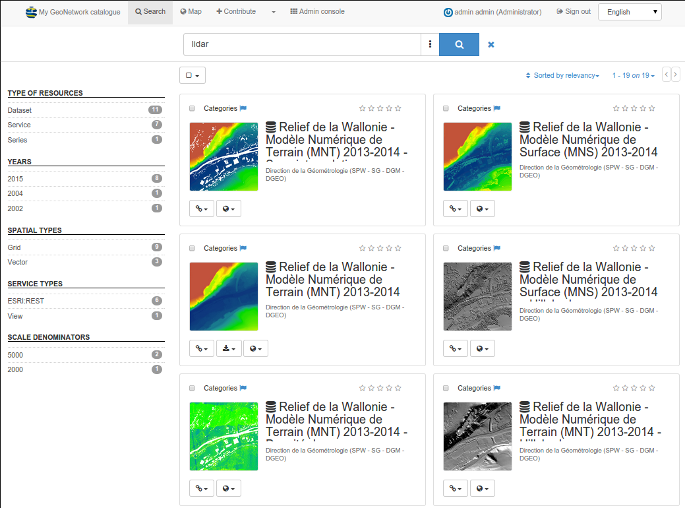
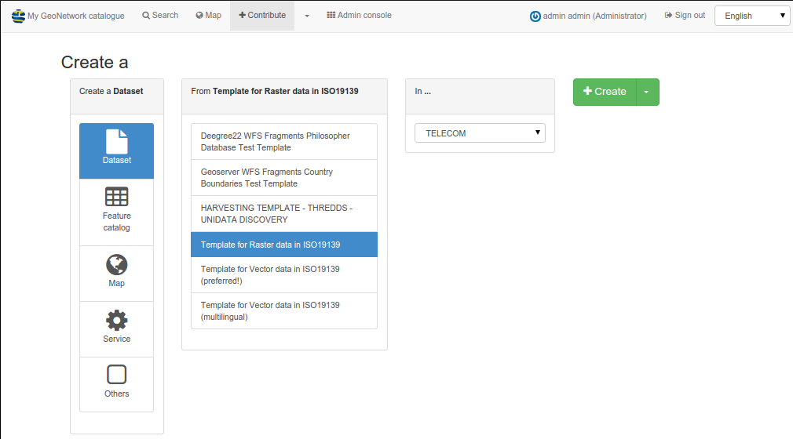
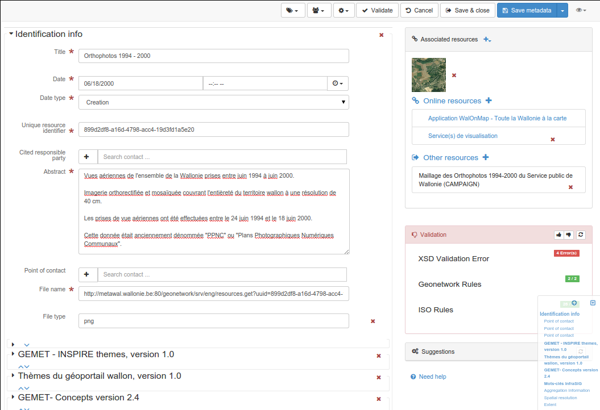
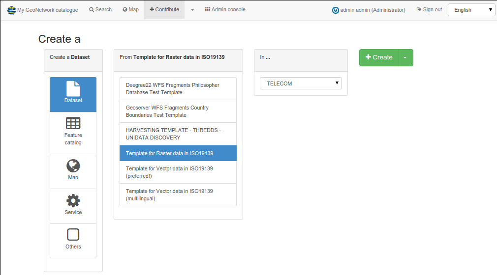
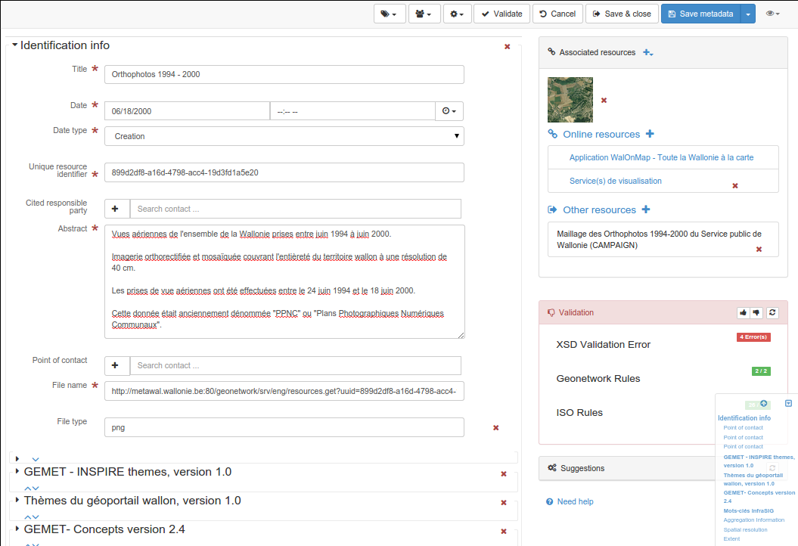

Gallery¶
GeoNetwork screenshots¶
 



GeoNetwork nodes¶
List of known GeoNetwork opensource based catalogues. Send us an email if you want your node to be listed here.
| Logo | Description | Link | Description |
|---|---|---|---|
| AfroMaison | http://afromaison.grid.unep.ch:8080/geonetwork/ | UNEP-GRID’s EU Framework Programme AfroMaison portal | |

|
AMAP géoportail | http://vmamapgn-test.mpl.ird.fr | Géoportail de l’UMR AMAP botAnique et Modélisation de l’Architecture des Plantes et des végétations |
| Brasil IBGE GeoNetwork | http://www.metadados.geo.ibge.gov.br/ | IBGE - Instituto Brasileiro de Geografia e Estatstica (Brazilian Institute of Geography and Statistics) | |
| Brasil INDE | http://www.metadados.inde.gov.br/ | Metadata catalog of INDE (National Infrastructure of Spatial Data) | |

|
Brasil IDE-SP GeoNetwork | http://www.metadados.idesp.sp.gov.br/geonetwork | Catalogue node of IDE-SP (Spatial Data Infrastructure of São Paulo State) |

|
CEBA géoportail | http://vmcebagn-dev.ird.fr | Labex CEBA Centre d’étude de la biodiversité amazonienne |
| CGIAR-CSI Main GeoNetwork Node | http://geonetwork.csi.cgiar.org | CGIAR-CSI - Consortium for Spatial Information - Main node | |

|
FAO GeoNetwork | http://www.fao.org/geonetwork | Food and Agriculture Organization of the United Nations GeoNetwork |
| FEB RAS | http://geoportal.kscnet.ru/geonetwork/srv/en/main.home | Institute of Volcanology and Seismology | |
| geoNorge | http://www.geonorge.no/geonetwork/srv/en/main.home | Norge digitalt | |
| GEOSS GEOportal | http://www.geoportal.org | The GEOportal provides an entry point to access Earth Observation information and services. Developed by ESA and FAO. GEOportal uses GeoNetwork for the catalog. InterMap is used as map viewer. | |

|
New Zealand’s Geodata.govt.nz | http://www.geodata.govt.nz | New Zealand’s catalogue of publicly-funded geospatial data |
| PBL - Netherlands Environmental Assessment Agency | http://geoservice.pbl.nl/geonetwork/srv/en/main.home | Geo-products of the Netherlands Environmental Assessment Agency | |
| SADC | http://www.sadc.int/geonetwork | Southern African Development Community | |
| SANDRE | http://sandre.eaufrance.fr/geonetwork | Le Service d’Administration Nationale des Données et Référentiels sur l’Eau | |
| SOPAC - Pacific Islands Applied Geoscience Commision | http://geonetwork.sopac.org | SOPAC GeoNetwork for Oceanographic data and information | |

|
UNEP Headquarters | ||
| UNGIWG - SALB | http://salbgeonetwork.grid.unep.ch/geonetwork/srv/en/main.home | Second Administrative Level Boundaries | |
| WODGIK - Katowice | http://www.wodgik.katowice.pl:8080/geonetwork/srv/en/main.home | Portal Katalogowy | |
| AIMS | http://data.aims.gov.au/geonetwork/srv/en/main.home | Australian Institute of Marine Science | |
| AODN | http://waodn.ivec.org/geonetwork/srv/en/main.home | Australian Ocean Data Network | |
| CARPE | http://congo.iluci.org:8080/geonetwork/srv/en/main.home | Central Africa Regional Program for the Environment | |
| CIAT GeoNetwork Node | http://gisweb.ciat.cgiar.org:8080/geonetwork/srv/en/main.home | CGIAR-CSI - Consortium for Spatial Information Centro CIAT - Internacional de Agricultura Tropical | |
| Cigal L’Alsace à la carte | https://www.cigalsace.org/geonetwork | ||
| CPWP Project GeoNetwork Node | http://geonetwork.waterandfood.org/ | ||
| CSIRO | http://mdu-data.arrc.csiro.au/geonetwork/srv/en/main.home | Minerals Down Under | |

|
Dutch National Geo Registry | http://www.nationaalgeoregister.nl | Nationaal Geo Register - The Netherlands |
| ecoMundus - Network for Environmental Information and Data | http://www.ecomundus.net | ||
| FÖMI catalog service / FÖMI katalógus szolgáltatás | http://www.geoshop.hu:80/geonetwork | ||
| GEO/IDEP | http://www.geoportaligm.gob.ec/geonetwork/srv/en/main.home | ||
| geocat.ch | http://www.geocat.ch/geonetwork/ | ||
| GeoCatalogue de la Région de Bruxelles-Capitale (CIRB/CIBG) | http://www.geo.irisnet.be/geonetwork | ||

|
GéoPicardie | http://www.geopicardie.fr/geonetwork | |

|
ICARDA GeoNetwork Node | http://geonet.icarda.cgiar.org/geonetwork | |
| IDE | http://138.100.63.169:8082/geonetwork/srv/es/main.home | Comunidades Rurales del Milenio Universidad Politecnica de Madrid | |
| Ifremer Sextant | http://sextant.ifremer.fr/fr/geoservices/catalogue | ||
| IGM Geoportal | http://www.geoportaligm.gob.ec/geonetwork/srv/en/main.home | ||

|
Impetus GeoNetwork | http://geonetwork.impetus.uni-koeln.de | An interdisciplinary research project from Germany (University of Cologne and Bonn) |
| INDE | http://www.metadados.inde.gov.br/geonetwork/srv/en/main.home | Infraestrutura Nacional de Dados Espaciais | |
| Integrated Marine Observing System | http://imosmest.aodn.org.au/geonetwork/srv/en/main.home | ||
| ISRIC | http://85.214.194.220/geonetwork/srv/en/main.home | World Soil Information | |
| It is developed by the Center Observation, Impacts, Energy (O.I.E.) of MINES ParisTech / ARMINES and supported by several international initiatives, various institutions, research project, SME’s and learned societies. | http://geocatalog.webservice-energy.org/ | Energy (O.I.E.) of MINES ParisTech / ARMINES and supported by several international initiatives | |

|
IVS FEB RAS GeoNetwork | http://geoportal.kscnet.ru/geonetwork/ | Institute of Volcanology and Seismology of FEB RAS Russia |
| IWMI GeoNetwork Node | http://geonetwork.iwmi.org | ||
| Metawal - Catalogue pour l’information géographique de Wallonie | http://metawal.wallonie.be/geonetwork/ | ||

|
Métropole de Lyon | https://download.data.grandlyon.com/catalogue | |

|
MMA | http://mapas.mma.gov.br/geonetwork/ | Ministerio do Meio Ambiente |

|
Napier City Council GeoNetwork | http://www.gis.napier.govt.nz/geonetwork | Napier City Council - New Zealand |
| NCCH | http://www.saeonocean.co.za/geonetwork/srv/en/main.home | South Africa portal | |
| North Pacific Marine Science Organization | http://67.212.128.197/geonetwork/srv/en/main.home | ||
| One Geology | http://onegeology-catalog.brgm.fr/geonetwork/srv/en/main.home | ||
| PACIVUR | http://www.pacivur-geocatalogo.ird.fr/geonetwork/srv/en/main.home | ||
| Paikkatietohakemisto (Maanmittauslaitos) | http://www.paikkatietohakemisto.fi:80/geonetwork/ | ||
| Parcs Nationaux de France | http://extranet.parcnational.fr/catalogue/liste.html | ||
| PIGMA Plateforme D’information Géographique Mutualisée en Aquitaine | http://www.pigma.org/ | ||
| Pilot kataloškog servera (Otišao) | http://geoportal.nipp.hr/geonetwork | ||
| Pusat linkungan geologi | http://122.200.145.136/geonetwork/srv/en/main.home | ||
| Slovenski Inspire metadata sistem (admin) | http://prostor3.gov.si:80/imps | ||
| SMIT - CENAPRED | http://smit.cenapred.gob.mx:8080/geonetwork/srv/en/main.home | ||
| South African Environmental Observation Network | http://www.saeonocean.co.za/geonetwork/srv/en/main.home | ||
| TABI | http://www.tabi.la/geonetwork/srv/en/main.home | The Agrobiodiversity Initiative | |
| UK Location Catalogue Publishing Service (Ordnance Survey, GB) | http://csw.data.gov.uk/geonetwork | ||

|
UNSDI-NCO | http://www.geonetwork.nl/ | GeoNetwork portal of the Netherlands Coordination Office of UNSDI |
| Volta Basin Authority | http://131.220.109.2/geonetwork/srv/en/main.home | ||
| WAGCOE | https://wagcoe.ivec.org/geonetwork/srv/en/main.home | ||
| Webservice-Energy Catalog provides worldwide information about Renewable Energy and Environment. | |||
| WFP VAM-SIE Headquarters | http://vam.wfp.org/geonetwork | United Nations World Food Programme GeoNetwork | |
| WHO Headquarters | http://www.who.int/geonetwork | World Health Organization GIS Resources | |
| ΚΑΤΑΛΟΓΟΣ (Elena) | http://www1.okxe.gr:80/geonetwork/ | ||
| ΚΑΤΑΛΟΓΟΣ (Elena) | http://www1.okxe.gr:80/geonetwork/ | ||
Previous: Community
Next: Acknowledgements